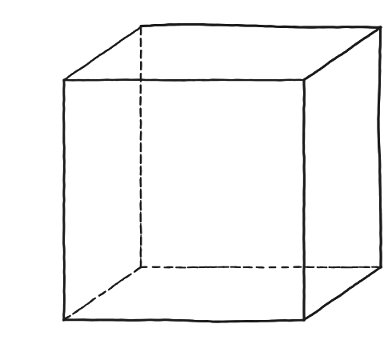
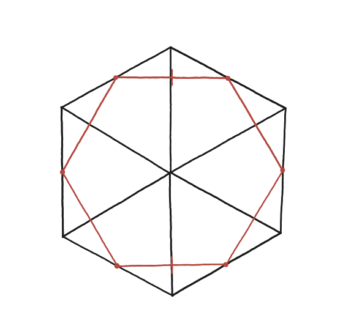

Pots trobar una secció transversal d'un cub que sigui un hexàgon regular?

No qualsevol pla serveix
Hi ha un pla de tall que funciona per raons de simetria. La diagonal principal del cub —la que va d'un vèrtex al vèrtex oposat, travessant l'interior— té una simetria de rotació de 120°: girant el cub al voltant d'aquesta diagonal, es veu igual tres cops per volta.
Hereta la simetria
Un pla tallat perpendicularment a aquesta diagonal, pel centre del cub, hereta aquesta mateixa simetria de 120°. Quina figura, si té simetria de 120° i toca cada cara del cub un cop, en pot sortir?
La construcció
Aquest cub es mira exactament al llarg de la diagonal principal —no en la projecció habitual del quadern— perquè és l'única direcció des de la qual el pla de tall es veu en veritable magnitud, sense aixafar-se. Vist així, el contorn del cub mateix ja dibuixa un hexàgon (negre): les sis arestes del cub que no toquen cap dels dos vèrtexs de la diagonal triada. L'hexàgon vermell —el pla de tall— hi apareix net al mig, tocant cadascuna d'aquelles sis arestes pel seu punt mitjà, sense creuar-se.

Tancar-ho
El pla talla exactament sis arestes del cub —les sis que no toquen cap dels dos vèrtexs de la diagonal triada— pel seu punt mitjà. Amb coordenades (cub de costat 1, diagonal de (0,0,0) a (1,1,1)), cal comprovar que els sis punts mitjans són tots a la mateixa distància del centre del cub, i que la distància entre dos punts mitjans consecutius és la mateixa arreu.
El pla perpendicular a una diagonal principal del cub, pel seu centre, talla exactament els punts mitjans de sis arestes, i aquests sis punts formen un hexàgon regular.
Comprovació
Punts mitjans com (1, 0.5, 0) i (0.5, 1, 0): distància √((0.5)²+(0.5)²+0²) = √0,5 ≈ 0,707. Fent-ho amb un altre parell consecutiu, per exemple (0.5,1,0) i (0,1,0.5): √(0,25+0+0,25) = √0,5 ≈ 0,707 —igual.